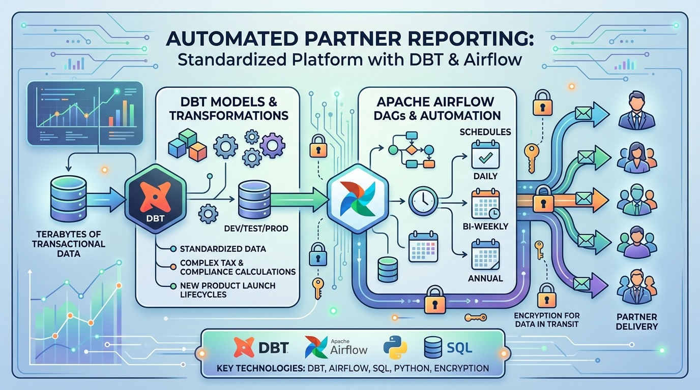
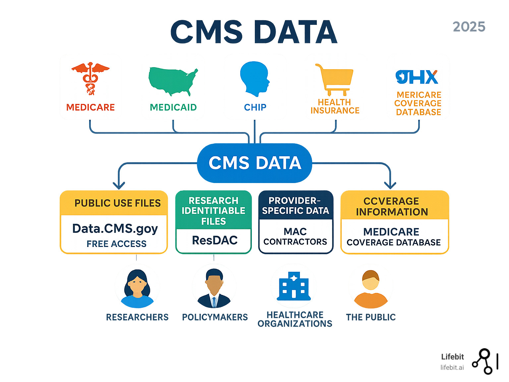

Data Operations & Pipelines
Airflow DAGs and DBT models that automate daily, bi-weekly and annual data delivery at terabyte scale, with data encrypted in transit.
Airflow DAGs and DBT models that automate daily, bi-weekly and annual data delivery at terabyte scale, with data encrypted in transit.
Power BI dashboards, DAX and M code, semantic models and Direct Lake on Microsoft Fabric, including dashboards embedded in EMR and CRM systems.
Star schemas, lakehouses and warehouses, plus migrations and dev/test/prod database lifecycles, designed so the platform can grow.
Regulatory-aligned data infrastructure, row-level and role-based security, and HIPAA-compliant sandbox environments.
Evaluated LLMs (Claude, LLaMA, GPT) and designed a secure sandbox so teams across the organization can use AI without their data leaking.
Technical lead on integration calls with partners such as AWS, United Airlines, Ryanair and Airbnb, keeping platforms compatible.
Built semantic models, lakehouse patterns, DAX logic, and secure healthcare-focused ETL workflows using Microsoft Fabric and Power BI. credentials
Developed secure, role-based reporting solutions using Power BI, Power Pages, and workspace design to deliver trusted analytics to business users. credentials
Expanded cloud expertise in S3, EC2, Lambda, IAM, and AWS analytics services while building practical knowledge for scalable and secure data environments. credentials
Strengthened expertise in ETL operations, data streaming, Redshift, SageMaker, and CI/CD workflows for production-grade cloud data engineering.
Earned a Gold Badge by solving advanced Python challenges and demonstrating strong problem-solving, logic, and data handling skills. credentials
Achieved Gold Badge status in SQL by mastering complex queries, window functions, joins, and database optimization techniques. credentials
Applied Tableau to exploratory analysis and storytelling, building interactive dashboards that communicate trends and model results to stakeholders.
Covered the full data science workflow: data wrangling, visualization, statistical analysis and machine learning with Python and SQL.

Cover Genius · InsurtechStandardized a monthly reporting platform that transforms terabytes of transactional data and automates tax and compliance calculations for global partners.

Healthcare · ComplianceA HIPAA-compliant sandbox and secure pipelines from U.S. government servers, used to calculate RAF scores and cost-to-patient metrics.
 Healthcare · BI
Healthcare · BI
Interactive dashboards embedded in clinical systems, with row-level security and automated alerting for refresh and data flow failures.